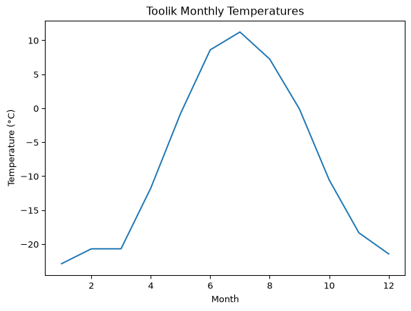
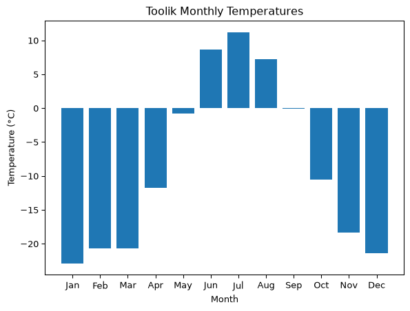
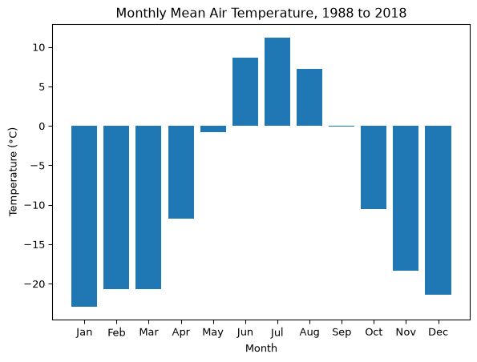

Code
import pandas as pd
import matplotlib.pyplot as plt
url = "https://eds-217-essential-python.github.io/data/toolik_weather.csv"
df = pd.read_csv(url)🎬 Rerun the Whole Game
Work the exercise first, then come here. The code below is one correct answer, not the only one. If your code looks different but produces the same numbers, you were right.
This is the Day 1 exercise, so most of the code was given to you. What this key is for is the outputs: you can see that your cells ran, but you cannot check on your own whether the numbers you got are the numbers you should have got. Compare your output against the tables and figures below, and compare your three f-string sentences against the green Answer boxes.
If something did not run, that is normal on the first afternoon of the course. Nothing here is assessed knowledge yet.
⬅️ Back to the exercise
11,171 rows and 21 columns. One row per day at Toolik Lake, from 1 June 1988 through 31 December 2018. If df.shape gave you something else, you loaded a different file.
Note that a notebook cell displays only its last expression. If you put df.head() and df.isnull().sum() in the same cell, you saw the null counts and not the head. Both are shown here, in separate cells.
| Year | Month | Date | LTER_Site | Station | Daily_AirTemp_Mean_C | Flag_Daily_AirTemp_Mean_C | Daily_AirTemp_AbsMax_C | Flag_Daily_AirTemp_AbsMax_C | Daily_AirTemp_AbsMin_C | ... | Daily_Precip_Total_mm | Flag_Daily_Precip_Total_mm | Daily_windsp_mean_msec | FLAG_Daily_windsp_mean_msec | Daily_Windspeed_AbsMax_m_s | Daily_globalrad_total_jcm2 | FLAG_Daily_globalrad_total_mjm2 | Moss | Soil20cm | Comments | |
|---|---|---|---|---|---|---|---|---|---|---|---|---|---|---|---|---|---|---|---|---|---|
| 0 | 1988 | 6 | 19880601 | ARC | TLKMAIN | 8.4 | E | NaN | NaN | NaN | ... | 0.0 | E | NaN | NaN | NaN | NaN | NaN | NaN | NaN | Air temp 1 & 5 meter estimated from regressio... |
| 1 | 1988 | 6 | 19880602 | ARC | TLKMAIN | 6.0 | E | NaN | NaN | NaN | ... | 0.0 | E | NaN | NaN | NaN | NaN | NaN | NaN | NaN | Air temp 1 & 5 meter estimated from regressio... |
| 2 | 1988 | 6 | 19880603 | ARC | TLKMAIN | 5.8 | E | NaN | NaN | NaN | ... | 0.0 | E | NaN | NaN | NaN | NaN | NaN | NaN | NaN | Air temp 1 & 5 meter estimated from regressio... |
| 3 | 1988 | 6 | 19880604 | ARC | TLKMAIN | 1.8 | E | NaN | NaN | NaN | ... | 0.0 | E | NaN | NaN | NaN | NaN | NaN | NaN | NaN | Air temp 1 & 5 meter estimated from regressio... |
| 4 | 1988 | 6 | 19880605 | ARC | TLKMAIN | 6.8 | E | NaN | NaN | NaN | ... | 2.5 | E | NaN | NaN | NaN | NaN | NaN | NaN | NaN | Air temp 1 & 5 meter estimated from regressio... |
5 rows × 21 columns
Year 0
Month 0
Date 0
LTER_Site 0
Station 0
Daily_AirTemp_Mean_C 0
Flag_Daily_AirTemp_Mean_C 9861
Daily_AirTemp_AbsMax_C 170
Flag_Daily_AirTemp_AbsMax_C 10151
Daily_AirTemp_AbsMin_C 204
Flag_Daily_AirTemp_AbsMin_C 9935
Daily_Precip_Total_mm 420
Flag_Daily_Precip_Total_mm 8002
Daily_windsp_mean_msec 826
FLAG_Daily_windsp_mean_msec 11170
Daily_Windspeed_AbsMax_m_s 846
Daily_globalrad_total_jcm2 7053
FLAG_Daily_globalrad_total_mjm2 11156
Moss 838
Soil20cm 820
Comments 2247
dtype: int64Daily_AirTemp_Mean_C shows 0. That is the column the rest of the exercise averages, so the temperature work needs no cleaning, which is the whole reason the health check comes first.
Most other columns do have missing values. Daily_globalrad_total_jcm2 is missing on 7,053 of the 11,171 days, Daily_windsp_mean_msec on 826, and Daily_Precip_Total_mm on 420. The Flag_ columns are almost entirely empty by design: a flag is only filled in when there is something to flag. A missing value is not always a mistake, and Day 4 covers what to do about the ones that are.
Month
1 -22.889032
2 -20.700945
3 -20.692366
4 -11.762556
5 -0.795161
6 8.589892
7 11.222060
8 7.234860
9 -0.110753
10 -10.544225
11 -18.339355
12 -21.442560
Name: Daily_AirTemp_Mean_C, dtype: float64Twelve numbers, one per month, running from -22.889032 in January to 11.222060 in July. This is a climatology: each value is the average of every January in the record, not any single January. Only three months average above freezing (June, July and August), and September at -0.110753 misses by a tenth of a degree.

A single curve with one peak in July and a long cold plateau from November through March. plt.plot used the Series index, the month numbers 1 to 12, for the x axis without being told to, which is why the axis is already labeled correctly.
Your change: swap the column for one from this menu, and store the result in a new variable so monthly_means stays put.
You only had to pick one. All three are shown here so you can check whichever you chose.
Month
1 16.435484
2 215.035714
3 894.564516
4 1793.317647
5 2161.012480
6 2041.905600
7 1726.110947
8 1183.694168
9 715.104603
10 286.236559
11 36.646667
12 4.425806
Name: Daily_globalrad_total_jcm2, dtype: float64Month
1 0.316590
2 0.490909
3 0.264937
4 0.317931
5 0.604227
6 1.537217
7 2.674922
8 2.041935
9 1.249828
10 0.671121
11 0.506000
12 0.425243
Name: Daily_Precip_Total_mm, dtype: float64Month
1 3.174017
2 3.434877
3 3.010670
4 2.882522
5 2.715439
6 2.990603
7 3.097863
8 3.101747
9 2.942411
10 2.745228
11 3.136996
12 2.779644
Name: Daily_windsp_mean_msec, dtype: float64For June, the month the exercise uses in its example, the three menu options give 2041.905600 J/cm2 of daily global radiation, 1.537217 mm of daily precipitation, and 2.990603 m/s of mean wind speed. Check your output against the line for whichever column you picked.
The three variables behave very differently across the year. Radiation swings by a factor of roughly 500, from 4.425806 J/cm2 in December to 2161.012480 J/cm2 in May, because at 68 degrees north the sun barely rises in winter. Precipitation peaks in July at 2.674922 mm per day. Wind speed hardly varies at all, staying between 2.7 and 3.5 m/s in every month, so it has no real season.
One thing to notice: the radiation means are computed from only the days that have a radiation value. .mean() skips missing values rather than failing on them. January’s figure comes from just 62 days spread across 25 years, while September’s comes from 717. The number is still meaningful, but it is not based on the same amount of evidence in every month.
✍️ Required: read one month’s value from your new result and report it in an f-string.
At Toolik, June's average daily global radiation was 2041.9 J/cm2.The sentence should print as At Toolik, June's average daily global radiation was 2041.9 J/cm2. The full value is 2041.905600, and rounding it to 2041.9 for a sentence is fine.
If you chose precipitation or wind instead, your sentence needs its own units: mm per day, or metres per second. Full credit here is for the number matching your own output and the units matching your own column. A number with the wrong units attached is worse than no number.
Your change: group by a different key. Build a new grouping and average the same temperature column into new variables.
31 yearly meansYear
1988 -4.879907
1989 -7.937534
1990 -8.538356
1991 -9.318082
1992 -10.342896
1993 -5.806575
1994 -9.803288
1995 -7.841918
1996 -9.104372
1997 -8.495342
1998 -6.983288
1999 -10.561918
2000 -8.967486
2001 -9.806301
2002 -6.810137
2003 -7.855890
2004 -8.259016
2005 -8.620822
2006 -8.312603
2007 -7.463836
2008 -9.586885
2009 -7.939452
2010 -8.273973
2011 -7.980822
2012 -9.824317
2013 -8.912055
2014 -7.084658
2015 -7.052877
2016 -6.609016
2017 -6.668493
2018 -7.060822
Name: Daily_AirTemp_Mean_C, dtype: float6431 numbers, one per year, and they are far more alike than the monthly ones. Every year from 1989 onward falls between -10.561918 (1999) and -5.806575 (1993), a spread of about 5 degrees, whereas the monthly values covered 34 degrees. Averaging over a whole year removes the seasonal cycle, so what is left is year-to-year variability, which is much smaller.
The exception is the first row. 1988 reads -4.879907, warmer than any other year, and the reason is that 1988 is an incomplete year. The record starts on 1 June 1988, so that year contributes 214 days instead of 365, all of them from June onward. Its mean is a summer-and-autumn average being compared against full-year averages. Treating a partial group as though it were a complete one is one of the most common mistakes in real data work, and you can catch it in one line with df.groupby('Year').size().
✍️ Required: read one year’s value from yearly_means and report it in an f-string.
In 2000, Toolik's average temperature was -8.97 degrees Celsius.The sentence should print as In 2000, Toolik's average temperature was -8.97 degrees Celsius. The full value in your output is -8.967486, and -8.97 is that value rounded to two decimals.
Any year is acceptable here, as long as the number in your sentence is the number on that year’s line in your own output. Do not copy the example if you read a different year.

Your change: give the chart a new title. Pick one and re-run.

Any of the three titles is correct. The bars are unchanged, since a title is a label on the figure and not part of the data.
The bar chart shows something the line plot did not make obvious: only three bars rise above zero, and the nine below it are much taller. September, at -0.110753, is so close to zero that its bar is almost invisible. The line plot and the bar chart show the same numbers, which is why it is worth drawing data more than one way.
✍️ Required: read the coldest month’s value off your chart and report it in an f-string.
Toolik's coldest month averages about -22.89 degrees Celsius.The sentence should print as Toolik's coldest month averages about -22.89 degrees Celsius. The coldest month is January, at -22.889032 in your Task 3 output.
December is the second coldest at -21.442560, so if you read the wrong bar you were only about 1.4 degrees off and would not have noticed from the picture alone. The check is to look back at the printed monthly_means from step 3 and confirm which month is actually lowest. Reading a value off a chart is a good way to get the general size of something and a poor way to get it exactly right.
If you compare your notebook against this key, look for these three things.
df or monthly without changing them, so restarting and running all cells should reproduce everything here exactly.⬅️ Back to the exercise